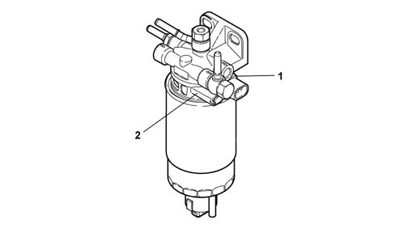
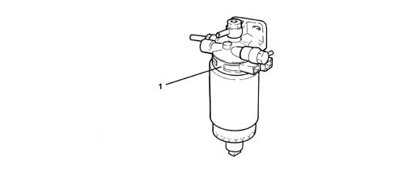

1044D fuel heating device
- Path
- Descriptions > 10 ENGINE > 1044 FUEL CIRCUIT PUMP/AND DEVICES > 1044D fuel heating device
- Kind
- system description
- Applies to
- engines: 1.9 JTD 8v , 1.9 JTD 16v, 2.4 JTD 10v, 2.4 JTD 20v; all production periods
- Interactive page
- https://sloeber94.github.io/elrnDB-a156/en/#/3232874
Applies to: engines: 1.9 JTD 8v , 2.4 JTD 10v; all production periods
Refer 1044B fuel filters
Applies to: engines: 1.9 JTD 16v; all production periods
COMPONENT DESCRIPTION
FUEL HEATING DEVICE
The fuel filter is equipped with a fuel pre-heating device (1) controlled by the injection control unit on the basis of a signal from a thermal switch (2) fitted to the fuel filter mount.

Applies to: engines: 2.4 JTD 20v; all production periods
COMPONENT DESCRIPTION
FUEL HEATING DEVICE
Specifcations
Type
The fuel filter is equipped with a fuel pre-heating device (1) controlled by the control unit with a built-in fuel temperature sensor. When the fuel temperature is below 6° C an electrical resistor heats it up to a maximum of 15° C before sending it to the injection pump.
